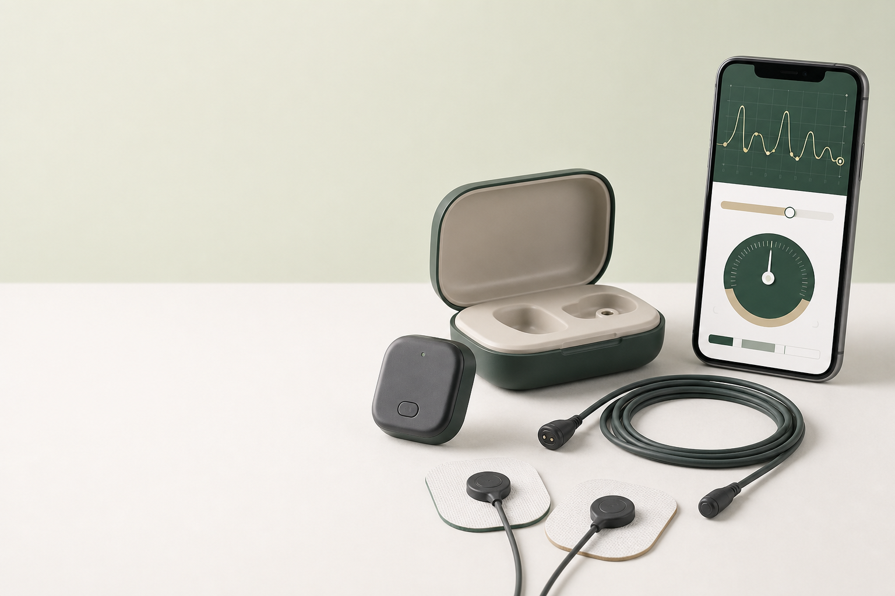

Тренировка ослабленных мышц
Сигнал помогает увидеть момент включения мышцы во время упражнения.
ПРОБОС помогает продолжать занятия между курсами реабилитации. Датчик считывает активность мышцы, а программа показывает ее на экране в понятной форме.

Tilda · CR45Датчик, электроды и программное обеспечение
Временный макет. Для запуска потребуется утвержденная фотография комплекта.
Пользователь видит результат каждого движения и учится точнее включать или расслаблять выбранную мышцу.
Сигнал помогает увидеть момент включения мышцы во время упражнения.
Занятие проходит по методике и с параметрами, которые назначил специалист.
Приложение хранит историю сеансов, результаты и личные достижения.
ПРОБОС применяется взрослыми и детьми по назначению специалиста. Методика зависит от диагноза, этапа восстановления и выбранной группы мышц.
Продолжение назначенной программы двигательной реабилитации дома.
Постепенная тренировка выбранной группы мышц и контроль динамики.
Игровые упражнения в составе комплексной программы реабилитации.
Наглядная работа с мимической мускулатурой в неврологии, стоматологии и косметологии.
Регулярные занятия между курсами очной реабилитации.
Индивидуальная настройка параметров и оценка активности мышцы специалистом.
В ролике показываем комплект, установку приложения, подготовку кожи, размещение электродов, запуск упражнения и просмотр результата.
Считывает электрическую активность мышцы и передает данные в приложение.
Расходные материалы для регистрации сигнала во время занятия.
Инструкции, упражнения, игровые сценарии и история результатов.
Специалист определит рабочую мышцу, покажет расположение электродов и подберет параметры упражнения.
Возможность применения и программу определяет специалист с учетом возраста, состояния и целей реабилитации.
Она дает специалисту больше возможностей для индивидуальной настройки тренировки и контроля динамики.
Список совместимых телефонов и компьютеров указывается для актуальной версии программы.
Расскажите, для кого нужен тренажер и какую задачу планируете решать. Специалист свяжется с вами и ответит на вопросы.